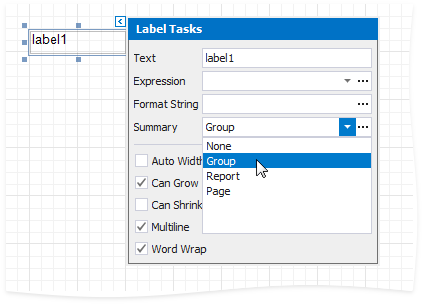
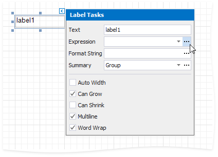
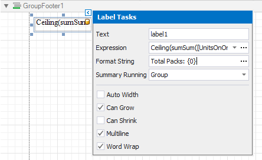

Calculate an Advanced Summary
This document describes how to calculate an advanced summary for report groups using a built-in summary function and arithmetical or logical functions.
Create a new report or open an existing one and bind it to a data source.
Switch to the Group and Sort panel and group the report's data by the required field. Display the footer for the created group.

Drop a Label onto the group footer to display the summary result.
Click the label's smart tag and set its Summary property to Group.

Click the Expression property's ellipsis button.

This invokes the Summary Expression Editor where you can specify a custom expression with the required summary functions and other logical or arithmetical functions. For example:

Tip
See the Functions in Expressions topic for a complete list of supported summary functions.
You can use the Format String property to format the summary's value.

Switch to Print Preview to see the result.